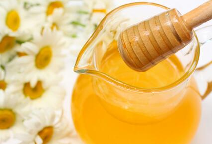

曾有一位尼师,在
蜂王一般能活三年,工蜂只活四十天左右。冬天,蜜蜂冬眠,等春天到来时,要死掉很多。
夏天工蜂很勤劳,每天都嗡嗡地飞来飞去,忙着采花粉酿蜜。等蜂匹中蜜满了以后,便将蜂蜜取出。取蜜时,要杀害很多小蜜蜂和蜂卵。取蜂王浆时,又要杀害很多小蜂虫。蜜蜂的成长分四个阶段:蜂卵、蜂虫、蛹和蛾。蛾就是蜜蜂。为了培养蜂王,把蜂卵放在特制的蜂匹上,工蜂知道那是将来的蜂王,就会为其做特制的浆液,就是蜂王浆。蜂虫没成蛹之前,它的卧室里全都是蜂王浆,然后用小镊子将蜂虫夹出来,这些蜂虫就会死掉,王浆就是这样得到的。
在她家养蜂的十年当中,她的父母为了获取蜂蜜、王浆,不知杀死了多少生命。在她读高中二年级时,家中的四十多箱蜜蜂,突然全都死掉了,黑压压的一片,好凄惨!从那以后,她的父母便结束了养蜂事业。
对于世间的营生产业,有智慧的人,应当详细抉择取舍——养猪、养鸡、养鱼、养鳖等固不当作,而养蜂、养蚕,也不应为,打猎、捕鱼、屠宰更不能作。 因被养动物多被宰杀而死亡,况且这些动物若造作恶业,主人也有一份。
比如:放养绵羊,绵羊吃小蛇、青蛙、鸟蛋等小含生;春天毛纺时,每只羊的身上,约十万微小生命,全部丧生;绵羊最终被杀,主人享用它们的皮肉。
——节录
最近几年,一些人开始放宽曾经一度严格定义的素食规则。当然,自尊心很强的他们不会去喝牛奶、咀嚼大肉,不过,却开启了昆虫世界的乳制品大门——享受一勺蜂蜜。然而,恰恰这一勺蜂蜜,在素食界引发了一场激烈的争论。每个相关论坛都有它的影子,它无所不在,却又悬而未决。
电台主持蕾切尔- 麦道儿在去年的CNN/YouTube 总统辩论赛中,也问了总统候选人丹尼斯- 库希尼其这个问题——蜂蜜是否也该像其他动物产品一样,被素食主义者禁止食用呢?或者说,由于蜜蜂在酿蜜过程中,似乎没有太过“受罪”,是否可以不与肉类、乳制品等相提并论呢? 保守派的素食者,对这种模棱两可的态度很坚决:蜂蜜,也属于动物产品,该被禁止。
1944年,第一个素食协会诞生时,创始人唐纳德-沃特森就将那些乳品素食者称为“肉食与真正人性的文明饮食之间的”半吊子,并恳请参与者们加入他的“完整旅途”。而这旅途中,显然没有蜂蜜的位置—任何与蜜蜂有关的,比如蜂花粉、
蜜蜂,被迫在可移动架模上筑起尺寸相同的蜂巢(有些人说,与野外天然的尺寸不同的蜂巢相比,这些蜂巢,更容易被寄生虫污染)。
蜂后,被囚禁于蜂房中; 而工蜂,则忙于增加产量,并被喷上预防疾病的抗生素。 与此同时,看守人为了顺利地取走蜂蜜,向蜂房放烟,以模糊蜜蜂的警报信息素。 有人说,蜜蜂们并不是为人类酿蜜,所以,我们的这种行为,无异于偷窃。
蜂王浆及蜂蜜
蜂王浆的采集,对蜜蜂们有什么伤害和影响?请看下面这段摘录:
“养蜂者用人为方法生产蜂王浆,实际上就是用人工制作一些‘王台’,放入蜂箱内,供蜂王产卵,待小幼虫孵出,工蜂们用蜂王浆伺喂时,养蜂人即将蜂王浆取出。实际上,养蜂人使用的是骗术……”
从这个来看,蜂王浆,绝对对蜜蜂们有很大的伤害。况且,是骗来的!
蜂王浆,是将成为新蜂王的小幼蜂出生后,工蜂们为伺喂它生长,而由身内分泌出的营养物质。人为取走王浆后,小蜂的死活,可想而知。
......
后学有一次亲眼看见采集蜂王浆的过程:
先用剪刀把蜂巢剪开一个小口,再用镊子把里面的蜜蜂幼虫揪出来,就开始取里面的蜂王浆,而被揪出来的幼虫,则会被人买了去炒鸡蛋吃。
不要吃蜂蜜、蜂王浆!
提取蜂王浆时,杀害了很多的幼虫,我亲眼见:每取出一粒干
而且,在收集花粉时,也会使一些蜜蜂受伤、残疾,甚至更严重。 蜂蜜在取出后,养蜂人会给蜜蜂吃糖,或是没售出去的陈蜜。
因此,我认为:获取大部分蜜蜂产品,是以伤害蜜蜂为代价的,应该拒绝使用,或是再清楚其来源,确定未损害蜜蜂本身的条件下使用。
我是在养蜂人养蜜蜂的帐篷里看见他挑蜂王幼虫的,当时,很难受。 第二天,又去他那里询问,他告诉我上诉内容的。 也见其他有关材料“夏天工蜂很勤劳,每天都嗡嗡地飞来飞去,忙着采花粉酿蜜。等蜂匹中蜜满了以后,便将蜂蜜取出。
取蜜时,要杀害很多小蜜蜂和蜂卵。 取蜂王浆时,又要杀害很多小蜂虫。 蜜蜂的成长,分四个阶段:蜂卵、蜂虫、蛹和蛾。
蛾,就是蜜蜂。
为了培养蜂王,把蜂卵放在特制的蜂匹上,工蜂知道那是将来的蜂王,就会为其做特制的浆液,就是蜂王浆。蜂虫没成蛹之前,它的卧室里,全都是蜂王浆。然后,蜂农用小镊子将蜂虫夹出来,这些蜂虫就会死掉,王浆,就是这样得到的。”